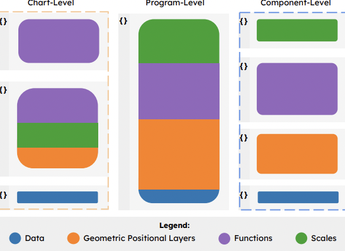

VisAnatomy: An SVG Chart Corpus with Fine-Grained Semantic Labels
Chen Chen, Hannah K. Bako, Peihong Yu, John Hooker, Jeffrey Joyal, Simon C. Wang, Samuel Kim, Jessica Wu, Aoxue Ding, Lara Sandeep, Alex Chen, Chayanika Sinha, Zhicheng Liu
IEEE Visualization and Visual Analytics Conference

How do Observable Users Decompose D3 Code? An Exploratory Study